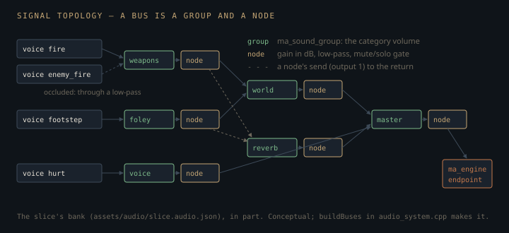

Monograph · Tree · ← Module hub · AudioSystem facade
audio
AudioSystem facade
Init, categories, handles, 3D, volumes.
A bus is a group and a node
The mixer is a tree of buses read from a bank (`audio_bank.hpp`: the slice's is `assets/audio/slice.audio.json`, master over world over weapons, impacts, foley and ambience, beside voice, ui, music and a reverb return). Every bus is two miniaudio nodes. Its voices play into an `ma_sound_group`; the group plays into the bus's own node; the node plays into its parent's group, and the root's into the endpoint:
ma_node_attach_output_bus(&bus->group, 0, &bus->node.base, 0);ohao/audio/audio_system.cpp:381if (parent) ma_node_attach_output_bus(&bus->node.base, 0, &parent->group, 0);ohao/audio/audio_system.cpp:384
The group carries the old category API. A world without a bank gets the default one, master over `sfx` (24 voices), `music` and `ambient`, so `SoundCategory` is now a name for a bus and a category volume is that bus's group volume, set once instead of re-multiplied into every live voice:
ma_sound_group_set_volume(&b->group, m_categoryVolumes[static_cast<std::size_t>(idx)]);ohao/audio/audio_system.cpp:872The node is ours (`AudioBusNode`), because what a bus does to its signal has to be the same frame for frame on every machine. It applies a gain linear in dB, ramped over the frames the caller names; a second-order Butterworth low-pass ramped in log frequency, its coefficients refreshed every 16 frames; and a mute/solo gate that opens or closes over 2 ms. Its parameters cross from the caller's thread through atomics and a version counter, read once per processed block. Per frame it is one multiply by the product of the two ramps:
const float g = gain * gateCur;ohao/audio/audio_system.cpp:251miniaudio has a low-pass node and group volumes already, but neither ramps in dB, and a duck or a snapshot is a ramp in dB: −6 dB over one step, back over fifteen, which `t26_duck_envelope` holds to 0.2 dB at every step boundary. A node of our own is also the place the reverb send (its second output, attached only while the send is above 0) and, later, a limiter go. Solo follows the tree: a soloed bus keeps its ancestors and descendants open and gates everything else.
Bank voices start on the frame
A bank voice reads decoded PCM through its own data source (`AudioVoiceSource`), not through miniaudio's start time or stop fade, because miniaudio 0.11.21 gets both wrong: `ma_node_read_pcm_frames` offsets a start inside a block by (block end − start) instead of (start − block begin), and `stop_with_fade` cut a voice at once here. The source reads `startFrame − engineFrame()` frames of silence first, and a stop's fade is the source's own linear ramp to its end:
source->delay = startFrame > now ? startFrame - now : 0;ohao/audio/audio_system.cpp:501Voices and groups are made without pitch: the bank's data is decoded at the engine's rate, and the pitch resampler, on by default, delayed every voice by a frame per node it crossed (`t26_start_time_sample_accurate` saw a click land 4 frames late through three groups):
const ma_uint32 flags = MA_SOUND_FLAG_NO_PITCH | (placement.spatial ? 0 : MA_SOUND_FLAG_NO_SPATIALIZATION);ohao/audio/audio_system.cpp:507Without a device (`initialize(true)`), `render` pulls frames from the engine directly, so a test or `audio_bench` hears exactly what a sequence of plays and bus changes produces, the same bytes twice.
Two factors per voice, a voice cap, and no limiter
A voice's own gain is now two factors, pushed down with `ma_sound_set_volume`; category and master are its buses' group volumes:
ma_sound_set_volume(instance.sound.get(), instance.baseVolume * occlusion);ohao/audio/audio_system.cpp:943$v_b$ is the base volume passed to a play (times the bank's `volume` for a bank sound), $o$ the occlusion cut (`kOccludedGainDb`, −8 dB, for a sound its `SoundShape` marks as behind a wall). The clamp sits at the entry points, where `clampVolume` applies $\mathrm{cl}(x) = \min(\max(x,0),1)$ — in the category play paths, in `setSoundVolume`, in `setCategoryVolume` and in `setMasterVolume` — so a voice can be attenuated, never amplified. A bus's dB gain is not clamped: a bank may raise a bus. Either way the ceiling is per voice and per bus, not per mix — the endpoint sums every bus with nothing after it, so a dozen simultaneous unity-gain effects clip the output.
What bounds N is a voice cap, not a limiter. `setVoiceLimit` (0, the default, is none; the window host sets 24) caps the category API's SFX sounds playing at once (bank voices are outside it: the bank's per-bus caps belong to the voice schedule, sub-project 11's step 3). A new one over the cap takes the place of the quietest at the listener, or is dropped when it would be the quietest itself, and either way one sound is counted in `voicesDropped`:
if (quietest == m_sounds.end() || audible <= quietestAudible) return false; // the new one is the quietestohao/audio/audio_system.cpp:774Twenty-four unity-gain voices can still clip the sum; the cap only stops the count growing without bound in a firefight.
The clamp is the only shaping in the chain, and it is linear amplitude rather than perceptual: a master slider at 0.5 is −6 dB, which reads as "somewhat quieter", not "half as loud". A UI wired straight to this value is top-heavy, and no curve is applied anywhere to fix that.
Spatialisation is opt-in because the default is on
miniaudio enables spatialisation on every `ma_sound` by default, so the non-positional path has to switch it back off — otherwise a UI click would be panned and attenuated according to wherever the listener happens to be standing:
ma_sound_set_spatialization_enabled(sound.get(), MA_FALSE);ohao/audio/audio_system.cpp:667That line is load-bearing, not defensive. The positional path sets the same flag to `MA_TRUE` — already the default — and then writes the distance model out longhand, from the `SoundShape` the caller passes:
ma_sound_set_min_distance(sound.get(), shape.minDistance);ohao/audio/audio_system.cpp:707ma_sound_set_max_distance(sound.get(), shape.maxDistance);ohao/audio/audio_system.cpp:708ma_sound_set_rolloff(sound.get(), shape.rolloff);ohao/audio/audio_system.cpp:709ma_sound_set_attenuation_model(sound.get(), ma_attenuation_model_inverse);ohao/audio/audio_system.cpp:710A default `SoundShape` is 1 m, 50 m and rolloff 1. Against `ma_spatializer_config_init`, which already selects the inverse model, a minimum distance of 1 and rolloff 1, only the maximum changes miniaudio's behaviour (its default is `MA_FLT_MAX`); the rest are defaults written down. The shape makes them a choice per sound: the window host gives gunfire 1 to 60 m and footsteps, landings and impacts 0.5 to 20 m at rolloff 1.5 (`runtime/game_audio.cpp`). A shape marked `occluded` also routes the sound through a low-pass node at `kOccludedLowPassHz` (1,200 Hz) on its way to its bus's group, beside the −8 dB cut in the gain above, so muting the bus still silences it (`t26_occluded_through_bus`).
miniaudio's inverse model (OpenAL's `AL_INVERSE_DISTANCE_CLAMPED`) computes a scalar gain from the listener-to-source distance $d$:
With the default shape, $d_{\min}=1$, $d_{\max}=50$ world units and rolloff $\rho=1$, the expression collapses to $g(d) = 1/\mathrm{clamp}(d,1,50)$: flat unity inside one unit, honest inverse-distance out to fifty, then a hard floor of $1/50 = 0.02$, roughly −34 dB. The facade computes the same curve itself (`distanceGain`) to rank voices for the cap.
The floor is the sharp edge. A looping ambient a kilometre away is neither culled nor silenced; it is held at $g(d_{\max})$, still decoded, still mixed, forever. Culling by distance would be the caller's job.
Where the mutex stops
`m_mutex` guards `m_sounds` and nothing else. That is a narrower promise than the class's shape implies, and it shows in four places.
The handle counter is bumped outside the lock — both play paths end in `start()`, which calls `nextHandle()` before entering the critical section, and the counter is a plain non-atomic read-modify-write:
return m_nextHandle++;ohao/audio/audio_system.cpp:947Two threads playing concurrently can be issued the same handle, and the second insertion then destroys the first sound through the map.
The mixer scalars are written outside the lock. `setMasterVolume` stores the clamped float first and only then locks to walk the map; `setCategoryVolume` has the same shape:
m_masterVolume = clampVolume(volume);ohao/audio/audio_system.cpp:914The reads are not symmetric, and the asymmetry does not save it. `updateSoundVolume` reads both scalars with the mutex held — all four of its call sites are inside locked regions — but a reader holding a lock the writer never takes is still racing. The two public getters do not even have that: `getMasterVolume` is an inline return in the header, and `getCategoryVolume` is an out-of-line read behind a category-validity branch, neither of them locked:
return m_categoryVolumes[static_cast<std::size_t>(soundCategoryIndex(category))];ohao/audio/audio_system.cpp:877Torn float reads are not a real hazard on the targets OHAO builds for, but these are races and a sanitiser will say so.
The third one bites. Both play paths capture a raw `ma_sound*`, move the owning instance into the map, release the lock, and only then start the sound. Nothing in the code says why the start is outside the critical section, and there is little to buy: `ma_sound_start` on a freshly initialised sound takes no lock of its own — it reads a few atomics and exchanges the node's state. What the ordering costs is a window in which a raw pointer to a map-owned object is live while the map is unlocked, and `stopAll` needs no handle to run:
void AudioSystem::stopAll() {ohao/audio/audio_system.cpp:918and clearing the map runs `MaSoundDeleter`, which uninitialises and frees the object that raw pointer still refers to:
ma_sound_uninit(sound);ohao/audio/audio_system.cpp:24A `stopAll` or `stopCategory` landing in that window starts a freed `ma_sound`. `stopSound` cannot reach it — the handle has not been returned yet — but the category-wide and global stops can, and the mutex exists precisely to promise they cannot.
The fourth is the widest, and it is not a window but a whole function. `shutdown()` takes no lock at all: it clears `m_sounds`, destroys the engine and clears `m_initialized`, and the destructor calls it.
m_engine.reset(); // MaEngineDeleter uninits the engineohao/audio/audio_system.cpp:347A `playSound`, `update` or `stopAll` running concurrently with teardown is an unguarded mutation of exactly the container the mutex is supposed to own, racing a thread that never takes the mutex at all. `m_initialized` is the same story one size down: written there, read without the lock by `update()`'s early-out and by the inline `isInitialized()`. Single-threaded teardown is the only regime in which this is safe, and nothing in the class enforces it.
The graph is a tree of buses, each a group (its volume is the category's) and a node of ours (gain in dB, low-pass, mute/solo, a send), with a low-pass node in front of an occluded voice. Category stop and pause are still C++ walking a map. The mutex covers that map while it is being walked; it does not cover the writes to the mixer scalars, the handle counter, or `shutdown()`. Bus parameters cross threads through the node's atomics instead.
One translation unit pays for miniaudio
The header forward-declares miniaudio's two types as incomplete structs:
struct ma_engine;ohao/audio/audio_system.hpp:37and owns them through `std::unique_ptr` with stateless custom deleters whose `operator()` is declared in the header and defined in the `.cpp`, where the types are complete. A `unique_ptr` with a custom deleter never needs the pointee to be complete — it only needs to call the deleter — so no translation unit that merely uses `AudioSystem` pays for miniaudio's single-header build. `miniaudio.h` is included in exactly one file in the tree, and that file is the one that asks for the implementation to be emitted:
#define MINIAUDIO_IMPLEMENTATIONohao/audio/audio_system.cpp:1The library semantics this page leans on — default-on spatialisation, the spatializer's default model and distances, non-rewinding stop — belong to a particular version, and the fetch names one rather than a moving ref:
URL https://github.com/mackron/miniaudio/archive/refs/tags/0.11.21.zipexternal/cmake/miniaudio.cmake:12That pin only binds on the branch that fetches. The module looks first for a `miniaudio.h` already sitting in the build tree and, finding one, uses it with no version check:
message(STATUS "miniaudio: Using pre-fetched header at ${MINIAUDIO_LOCAL_DIR}")external/cmake/miniaudio.cmake:6So a stale or hand-dropped header in `build/_deps` is consumed silently, and the URL above documents what a clean configure would download, not necessarily what compiled.
The reaper, and who calls it
Finished one-shots are not freed when they end; they are freed when someone asks. `update()` is the only reaper, and its predicate is "not looping and at end":
return !ma_sound_is_looping(instance.sound.get()) && ma_sound_at_end(instance.sound.get());ohao/audio/audio_system.cpp:936Skip it and every fired one-shot stays in the map, attached to the endpoint, being mixed as silence. The voice cap reaps too, before it counts voices, but only when a capped SFX sound starts. The one caller that runs every frame is the window host, which owns the engine's single `AudioSystem` (footsteps and combat sounds play through it) and reaps after the frame's steps:
if (m_audio) m_audio->update(); // finished sounds free their voicesohao/runtime/live_host.cpp:205`ohao_audio` is on the link line of every example —
-Wl,--start-group ohao_ecs ohao_renderer ohao_gpu_vulkan ohao_scene ohao_physics ohao_audio ohao_core -Wl,--end-groupexamples/CMakeLists.txt:18— but the examples themselves never touch `AudioSystem`; only `ohao/runtime` does, and only in a window host with sound on (headless hosts play nothing). The facade's own test suite pins the handle contract — a missing file returns `INVALID_SOUND_HANDLE` rather than throwing — and skips every device-dependent case when `initialize()` fails, so machines with no audio device still pass:
bool testPlayInvalidPath() {tests/audio/audio_system_tests.cpp:225Its test 26 (`t26_*`) creates voices on a mixer without a device and listens to what comes out: a bus's gain on its subtree only, mute and solo by Goertzel power, start times to the frame, a duck and a snapshot's ramps in dB, a stop's fade, and two renders bit for bit. In `runtime_tests`, `sp9_t21_voice_cap` starts 30 positioned sounds under the 24-voice cap and checks that the 24 loudest at the listener play and that the 6 lost are counted, while `sp9_t21_distance_curves` checks the shapes against `distanceGain`.
Contracts
- `m_sounds` must be cleared before `m_engine` is released — each sound holds a reference-counted handle on engine-owned decoded data, and `MaEngineDeleter` runs `ma_engine_uninit` unconditionally. `shutdown()` does it in that order and the destructor calls `shutdown()`; swapping those two lines is a use-after-free at exit.
m_sounds.clear(); // MaSoundDeleter uninits each soundohao/audio/audio_system.cpp:344- `m_categoryVolumes` is a hard-coded `std::array<float, 3>`, not sized from `SoundCategory::Count`. Add a fourth category, teach `isValidSoundCategory` to accept it, and `setCategoryVolume` writes out of bounds — silently, because the index comes from the enum and nothing checks it against the array.
std::array<float, 3> m_categoryVolumes{{1.0f, 1.0f, 1.0f}}; // SFX, Music, Ambientohao/audio/audio_system.hpp:298- `pauseSound` is `ma_sound_stop`, which in miniaudio does not rewind, so `resumeSound`'s `ma_sound_start` continues from the cursor. `stopSound` is different in kind: it erases the instance, so the handle dies with the sound.
- Handles are never recycled and 0 is reserved, so a stale handle is a lookup miss and every setter no-ops. "Reaped", "stopped" and "never existed" are indistinguishable from outside — `isPlaying` returns false for all three, and for a paused sound as well.
- One listener, index 0, fixed at engine init. Split-screen would need `listenerCount` raised and a pinned listener index per sound; neither exists.
config.listenerCount = 1;ohao/audio/audio_system.cpp:320Source files
ohao/audio/audio_system.cppohao/audio/audio_system.hppexternal/cmake/miniaudio.cmakeohao/runtime/live_host.cppexamples/CMakeLists.txttests/audio/audio_system_tests.cppohao/audio/audio_module.hpppath noteParent hub for the full pipeline narrative; this page is the file-level design unit. Sitemap · hover glossary terms anywhere.